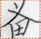
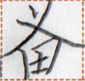

← Previous
Index
Next →
English: How do you know Ms. Show?
Chinese: 你怎么认识夏小姐的？
Chinese (pinyin): Nǐ zěnme rènshi Xià xiǎojiě de?
Pekzep (latin transcription): mua2 em nan2 can2 xo1 xizi.
Pekzep (hanzi transcription): 汝如何識夏xizi。
Pekzep (linzklā): 


 



Sound:
Analysis: